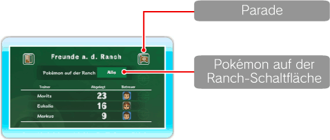
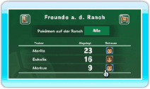
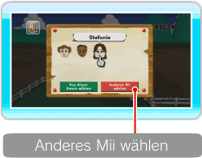
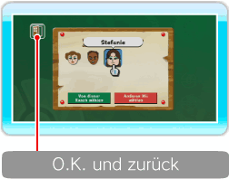
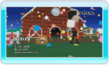

18 |
Details |
 |
Hier kannst du die Pokémon und die Miis auf der Ranch überprüfen und dir die Parade ansehen. Außerdem kannst du wählen, welche Pokémon auf der Ranch angezeigt werden, indem du auf die Schaltfläche rechts neben POKéMON AUF DER RANCH zeigst und  ● Was ist ein Pokémon-Betreuer? Ein Betreuer kümmert sich um die Pokémon, die ein Trainer auf die Ranch gebracht hat. Zwischen einem Betreuer und den von ihm betreuten Pokémon besteht eine freundschaftliche Beziehung. 
● Betreuer wechseln Zeige auf dem Details-Bildschirm auf das Mii, das du auswechseln möchtest, und Ein Mii als Betreuer wählen, das bereits auf der Ranch ist Wenn der Betreuerwechsel-Bildschirm erscheint, zeige auf das gewünschte Mii und drücke Hinweis: Mit
Ein Mii als Betreuer wählen, das noch nicht auf der Ranch ist


Wenn das gewünschte Mii nicht auf dem Betreuerwechsel-Bildschirm erscheint, zeige auf ANDERES Mii WÄHLEN und drücke Hinweis: Wenn die maximale Anzahl der Miis auf der Ranch bereits erreicht ist, steht die Funktion ANDERES Mii WÄHLEN nicht zur Verfügung. Wenn du fertig bist, zeige auf O.K. UND ZURÜCK und drücke Hinweis: Eukalias Status kann nicht verändert werden. Gelöschte Miis Wenn du ein Mii im Mii-Kanal löschst, verschwindet es auch von der Ranch und ein neues Mii wird automatisch als Betreuer bestimmt. ● Favoriten Diese Funktion wird freigeschaltet, wenn die Ranch ein bestimmtes Level erreicht. Sobald du Pokémon zu deinen Favoriten machst, hast du die Möglichkeit, dir nur deine Favoriten auf der Ranch anzeigen zu lassen. Um ein Pokémon zu deinen Favoriten hinzuzufügen, zeige auf neben dem Pokémonnamen und drücke

● Parade Zeige auf PARADE im Details-Bildschirm und drücke |

 markierte Miis sind bereits als Betreuer eingeteilt.
markierte Miis sind bereits als Betreuer eingeteilt. die Parade abbrechen.
die Parade abbrechen. |
 |
 |